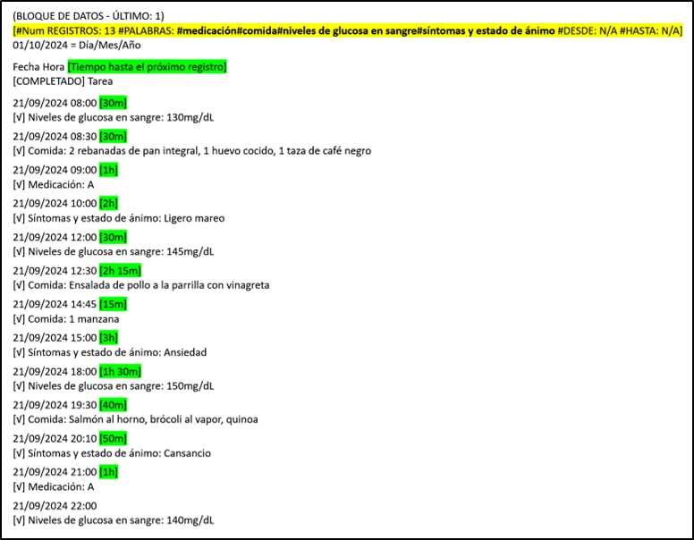

Este manual le mostrará cómo usar el sistema de búsqueda para crear un informe con registros específicos.
Esto permitirá encontrar registros específicos y crear un informe, archivo de texto, que una persona podrá leer. Luego podrá compartir la información con otras personas.
Crear un informe con su propia información podría ser útil en situaciones como estas:
1. Visitas al médico: Puede exportar su consumo de medicamentos, síntomas y registros de estado de ánimo para compartir con su doctor. Esto puede ayudar al doctor a tomar decisiones más adecuadas sobre los planes de tratamiento.
2. Dietistas/nutricionistas: Podrás registrar tu dieta y peso y compartir estos registros con tu especialista para obtener asesoramiento dietético personalizado.
3. Entrenadores personales: Puede compartir sus registros de entrenamiento y progreso con su entrenador personal para obtener planes de acondicionamiento físico personalizados.
4. Salud mental: Puede registrar su estado de ánimo y compartirlo con sus terapeutas para una mejor gestión de la salud mental.
5. Proyectos de trabajo: Puede registrar tareas completadas y tiempo dedicado a varias tareas y compartir estos registros con su equipo. Esto hara su trabajo mas facil y eficiente.
6. Registros de viajes: Puede registrar sus experiencias de viaje, incluidos los lugares visitados y las actividades realizadas, y compartir estos registros con amigos o en redes sociales.
7. Documentación legal: Puede mantener registros de eventos o actividades importantes y compartirlos con asesores legales si es necesario.
Estos son solo algunos ejemplos de cómo aplicar esta función a tu vida para hacer las cosas más fáciles y eficientes.
Recuerde, SECURElogBook es una HERRAMIENTA SEGURA Y FLEXIBLE que puede usar para muchas cosas diferentes!
Supongamos que estamos viviendo en el futuro y una persona sufre de diabetes. El médico le pedirá que registre esta información:
. Medicación.
. Comida.
. Niveles de glucosa en sangre.
. Síntomas y estado de ánimo.
Una vez tengamos la información podemos compartirla con nuestro médico.
1. Abra el sistema de búsqueda presionando el botón
Porque queremos encontrar todos los registros relacionados con:
. Medicación.
. Comida.
. Niveles de glucosa en sangre.
. Síntomas y estado de ánimo.
Añadimos “#” delante de cada palabra. Esto permite que el sistema de búsqueda encuentre múltiples palabras al mismo tiempo. El sistema de búsqueda permite encontrar hasta 5 palabras diferentes al mismo tiempo. El sistema de búsqueda solo mostrará registros donde esas palabras estén presentes.
2. Presione “BUSCAR”.
Ahora SECURElogBook solo mostrará los resultados de la búsqueda:

3. Abra el sistema de búsqueda nuevamente presionando
Ahora, debido a que hay resultados en la búsqueda, el sistema de búsqueda mostrará dos botones adicionales en la esquina inferior izquierda.
4. Presione el botón, indicado con una flecha amarilla en la imagen de arriba, para abrir la ventana “INFORME”.
La ventana “INFORME” transformará los registros en un informe, archivo de texto, que una persona podrá leer.
Esta ventana generará bloques de datos, información de texto, que puede copiar y pegar. Cuanta más información tenga la búsqueda, más bloques de datos se crearán.
5. Mantenga presionado el bloque de datos para copiarlo.
Recuerde que si cierra la ventana “INFORME”, la información se eliminará del portapapeles para no permitir que otras aplicaciones accedan a su información.
6. Pegue la información en la aplicación de mensajería instantánea o en la aplicación de correo electrónico para compartir la información el doctor.

. #REGISTROS No. = Número de resultados de búsqueda.
. #PALABRAS = Términos buscados.
. #DESDE = Fecha de inicio.
. #HASTA = Fecha de finalización.
También puede compartir la información sin internet, usando una unidad USB, memoria USB o tarjeta SD.
Recuerde que puede proteger su información. 7-Zip es un archivador de archivos gratuito y de código abierto para Windows. Puede usarlo para proteger su información con contraseña/cifrado.
Ahora su médico puede revisar su información para ver si es efectiva y hacer los cambios necesarios si es necesario.
SECURElogBook no es otra lista de tareas, SECURElogBook es una HERRAMIENTA SEGURA Y FLEXIBLE que puedes usar para hacer tu vida más fácil y mejor, dentro y fuera del trabajo!